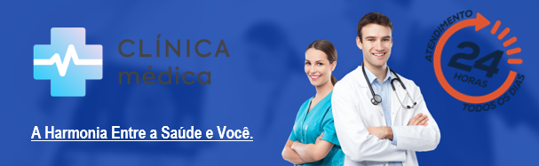

Aceite essa parceria
Com a "Clínica Médica" você tem à disposição atendimento médico multidisciplinar para orientações por telefone, consultas online por telemedicina e presenciais, além de acesso a clínicas e laboratórios para a realização de exames de imagem e laboratoriais e ainda acesso a descontos em sua medicação.
Se você busca uma alternativa acessível entre planos de saúde e rede pública (SUS), a "Clínica Médica" é a solução indicada. É só escolher o plano que mais se adequa as suas necessidades em nosso portal, e baixar o app para agendar suas consultas e exames (24h. por dia, 7 dias por semana).
“Saúde é o estado de completo bem-estar físico, mental e social e não somente a ausência de doença.”
(Definição da Organização Mundial de Saúde).
Endereço:
Rua Bela Vista, 8695. (6º Andar)
Santo Antônio - Cariacica - Espírito Santo / ES.
CEP.79959-451 / WhatsApp: (81)99112-3711.
Santo Antônio - Cariacica - Espírito Santo / ES.
CEP.79959-451 / WhatsApp: (81)99112-3711.
© Copyright Washington Rodrigues - 2023.